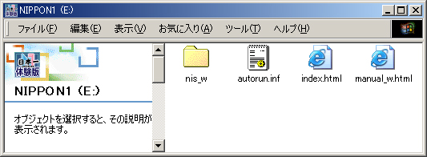
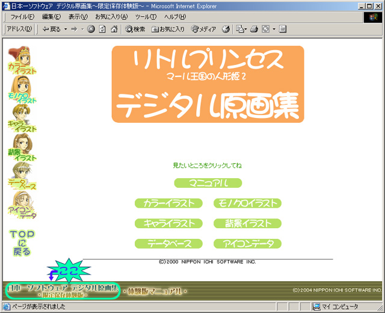

日本一ソフトウェア デジタル原画集 〜限定保存体験版〜
操作方法説明書
1.スタート方法
Windowsでご使用の場合
『日本一ソフトウェア デジタル原画集 〜限定保存体験版〜』CD-ROMをCD-ROMドライブにセットすると、自動的にソフトがスタートします。
※自動的にソフトがスタートしない場合は、『マイコンピュータ』アイコンをダブルクリックして、中にあるCD-ROMドライブのアイコンを右クリックして表示されるメニューから『開く』を選んで以下の写真の画面を開いてください。
フォルダの中のindex.html アイコンをダブルクリックするとソフトがスタートします。
※MANUAL_W.html（この文章です）は、本ソフトのマニュアルです。
ソフトご使用前にご一読ください。
（ソフト起動後のメニューから読む事も出来ます）

Macintoshでご使用の場合
2.収録内容について
『日本一ソフトウェア デジタル原画集 〜限定保存体験版〜』CD-ROMには以下の内容が収録されています。
マニュアル
本ソフトの解説書です。ソフトご使用前にご一読ください。
リトルプリンセス デジタル原画集(体験版)
PlayStation用ソフト『リトルプリンセス−マール王国の人形姫2−』の本編中に使用された物や広報などに使用したカラーイラスト、背景イラスト等が収録されています。
天使のプレゼント＋マール王国の人形姫 デジタル原画集(体験版)
PlayStation2用ソフト『天使のプレゼント−マール王国物語−』の本編中に使用された物や広報などに使用したカラーイラスト、背景イラスト等が収録されています。
さらに、PlayStation用ソフト『マール王国の人形姫』のデジタル原画集も収録されています。
ラ･ピュセル デジタル原画集(体験版)
PlayStation2用ソフト『ラ･ピュセル 〜光の聖女伝説〜』の本編中に使用された物や広報などに使用したカラーイラスト、3D・2D背景イラスト等が収録されています。
魔界戦記ディスガイア デジタル原画集(体験版)
PlayStation2用ソフト『魔界戦記 ディスガイア』の本編中に使用された物や広報などに使用したキャラクターイラスト、カラーイラスト等が収録されています。
ファントム・ブレイブ デジタル原画集(体験版)
PlayStation2用ソフト『ファントム･ブレイブ』の本編中に使用された物や広報などに使用したキャラクターイラスト、カラーイラスト等が収録されています。
3.操作方法について
ソフトの操作方法について説明します。
見たい内容を選ぶ
日本一ソフトウェア デジタル原画集 〜限定保存体験版〜メニューに戻る
画面下に表示されている、『日本一ソフトウェア デジタル原画集 〜限定保存体験版〜』の文字をクリックして下さい。
日本一ソフトウェア デジタル原画集 〜限定保存体験版〜メニュー 一覧画面が表示されます。

4.ユーザーサポート
ユーザーサポート連絡先
Tel：0583-71-7239 Fax：0583-71-7212（AM 9：30〜PM 5：30 土日祝日を除く）
〒504-0835 岐阜県各務原市那加雄飛ヶ丘町 17番地46
株式会社 日本一ソフトウェア ユーザーサポート係
日本一ソフトウェア ホームページアドレス http://nippon1.jp/
5.注意事項
注意事項
※本CD-ROMをオーディオ用CDプレイヤーでは絶対に再生しないでください。スピーカーが破壊されたり、耳に障害を起こす事があります。
※本CD-ROMに収録されたデータの全部または一部を権利者に無断で複製・転載・改変することは、これを固く禁じます。
※製品名および社名は、各社の商標、登録商標です。